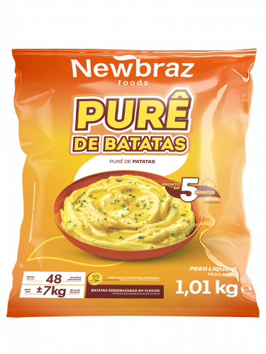

Purê de Batatas

Peso: 1,01 kg
Descrição: Purê de batatas prático e delicioso, pronto para preparo rápido. Textura cremosa e sabor autêntico, ideal para restaurantes e estabelecimentos que buscam praticidade sem abrir mão da qualidade.
Preparação: Fácil preparo, basta seguir as instruções da embalagem. Pode ser aquecido no micro-ondas ou fogão.
Ingredientes: Batata, leite em pó, manteiga, sal e conservantes permitidos.
Armazenamento: Manter congelado a -18°C. Uma vez descongelado, não recongelar.
Validade: 12 meses quando armazenado corretamente.
Solicitar Orçamento